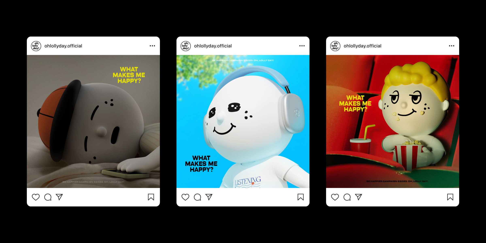

What makes me happy?
Be happier campaign 2023
Be happier campaign 2023
오롤리데이는 매년 비해피어캠페인을 통해 누구나 행복해질 수 있다는 메시지를 전달하고 있습니다. ‘What makes me happy?’는 일상에서 느낄 수 있는 나만의 작은 행복 16가지를 그래픽으로 만들어 소개하는 2023 캠페인으로, 팝업 스토어의 형식으로 성수 연무장길에서 약 2주동안 진행되었습니다. 해당 팝업스토어에서 3D 캐릭터 가이드를 기반으로 비해피어캠페인의 옥외 배너, 굿즈, SNS 콘텐츠를 제작했습니다.
OH, LOLLY DAY! sends a message every year that anyone can be happy through ‘Be happier campaign’. ‘What makes me happy?’ is a 2023 campaign that introduces the messages of 16 small things that you can feel happiness in your daily life by graphics. It was held for about two weeks on Yeonmu-gil in Seongsu, in the form of a pop-up store. I designed outdoor banners, goods, and SNS contents based on the 3D character guide.
OH, LOLLY DAY! sends a message every year that anyone can be happy through ‘Be happier campaign’. ‘What makes me happy?’ is a 2023 campaign that introduces the messages of 16 small things that you can feel happiness in your daily life by graphics. It was held for about two weeks on Yeonmu-gil in Seongsu, in the form of a pop-up store. I designed outdoor banners, goods, and SNS contents based on the 3D character guide.

당신은 무엇을 통해 일상에서 나만의 작은 행복을 느끼나요? 2023 비해피어캠페인은 일상 속에서 발견할 수 있는 나만의 작은 행복은 무엇인지 질문을 던집니다.
What makes you feel your own little happiness in everyday life? The 2023 Be Happier Campaign asks you the question of what your own little happiness can be found in everyday life.
